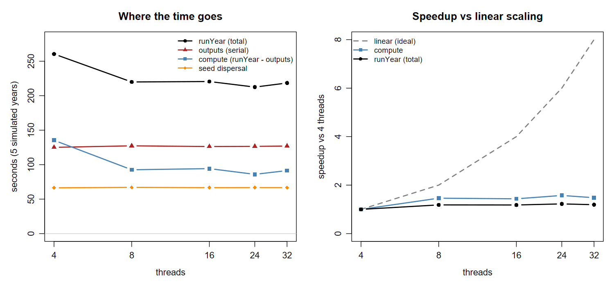

iLand thread scaling: where the time actually goes
2026-08-24 · landscape_alaska_01 · Threadripper 7970X (32 physical / 64 logical cores, 255.5 GB)
Summary
Threads buy almost nothing beyond 8, and switching the output writers off shows this is not an artefact of output cost: compute alone does not scale past 8 threads either. Going from 8 to 32 threads changes total scenario runtime by ~1%.
In order of how much they matter for the Derecho round:
- Nothing sets
threadCountin production. The XML carries-1and the runner never overrides it, so every step asks for all 128 cores — 384 threads on a 3-step node. Check this first; it is one grep, and it gates everything below. - A node is memory-bound, not CPU-bound, and memory does not depend on thread count (29.71 vs 29.66 GB at 8 vs 32 threads). Steps-per-node is a memory question only.
- 4 steps per node is supported, 5 is not. A production-length replicate peaks at 37.4 GB, so 4 steps is 149 GB locally and 165–210 GB once Derecho’s observed overhead is applied, against a 235 GB budget. Do this only after (1), since packing a node harder while every step requests all its cores makes contention worse.
- 8 threads per step is enough — scenario configuration and spinup. The writers-off sweep was expected to favour more threads and did not.
- GeoTIFF grid inputs are correct and can replace the
.txtgrids, but no speed benefit is demonstrable from this data.
The one thing that does not transfer from a short run is memory: it grows with simulated years, so a 5-year test would have cleared 4 steps far too easily. Timing proportions do transfer, and were confirmed against a full 86-year run.
Method
Four sweeps against the same sandbox, all seeded (randomSeed=42) and all 5 simulated years from a snapshot start (68 M trees), so every config does the same work:
| mode | configs | question |
|---|---|---|
threads |
4, 8, 16, 24, 32 threads | how does the real scenario configuration scale? |
nooutput |
4, 8, 16, 24, 32 threads, all big writers off | does compute scale, with output removed? |
geotiff |
.txt vs .tif grids |
are GeoTIFF inputs equivalent, and faster? |
memthreads |
8 vs 32 threads, peak RSS | does thread count change memory? |
memthreads at YEARS=1 / 86 |
8 threads | does memory grow with simulated years? |
The base config is landscape_alaska_01_2015-2100scenario.xml with stand, saplingdetail, carbon and water writing every year — the real scenario configuration, not a proxy, so the proportions transfer to the 288-line round directly.
Timings are iLand’s own timer block rather than process wall time, because the block separates output from compute. Output went to a local SSD (D:), so the output timer measures writing and not network latency. Threads were capped at 32, the physical core count; above that is SMT, which a Derecho node does not have.
Results: the scenario sweep
threads runYear outputs compute seed_disp sp_total sp_compute ideal
4 260.5 125.1 135.3 66.5 1.00 1.00 1
8 219.9 127.3 92.6 67.1 1.18 1.46 2
16 220.5 126.3 94.3 66.7 1.18 1.44 4
24 212.5 126.5 86.0 66.8 1.23 1.57 6
32 218.4 127.0 91.4 66.8 1.19 1.48 8
8 threads captures all of the available gain. The 212–220 s spread across 8/16/24/32 is ~4%, and per-thread RNG gives each config a 0.03% different workload, so 24 threads being nominally fastest is noise rather than a result.
Why it does not scale
Two components are flat across 4→32 threads, but for different reasons, and the difference matters:
| component | mean | spread | parallelised over | max useful threads |
|---|---|---|---|---|
outputs |
126.4 s | 1.7% | nothing — one SQLite connection | 1 |
seed dispersal |
66.7 s | 0.9% | species | 4 |
applyPattern / readPattern / growTrees |
— | scales ~1.5× | resource units | many |
From src/core/model.cpp in the iLand source, seed dispersal runs foreach (SpeciesSet *set, mSpeciesSets) set->regeneration() — a loop over species, not over resource units. This landscape has four species (Pima, Pigl, Potr, Bene), so seed dispersal saturates at four threads and sits at 66.7 s from 4 threads onward. The pattern and growth phases use threadRunner.run(...) over resource units and do scale, but only ~1.5× on 8× the cores.
So outputs is genuinely serial; seed dispersal is not serial, it is 4-way capped. That distinction explains why Derecho showed ~38.8 average active cores rather than the ~17 a strictly-serial model would predict.
Together the two account for 194 s of the 220 s at 8 threads. With ~12% of the work scalable, Amdahl caps total speedup at ~1.14× however many cores are added — which is what the plot shows against the dashed ideal.
The RU-parallel phases scale sub-linearly because of memory bandwidth, not logic: the 2 m light grid is 17,700² ≈ 313 million cells, streamed every simulated year. More threads do not widen the memory bus.
The 98% CPU observation, resolved
Three concurrent local instances pegged the CPU at 98%, which looks like it contradicts “8 threads is enough”. It does not. Those runs used threadCount = -1, so each instance requested all 64 logical cores — 192 threads on 64 cores, 3× oversubscribed. The CPU was saturated by threads contending for cores, not by work that needed them.
High CPU utilisation is not evidence of useful parallelism. Nothing has been missed here; this is iLand’s architecture meeting a four-species landscape.
Results: writers off
The scenario sweep derives compute as runYear − outputs, which assumes output and compute do not overlap. Disabling the writers removes the assumption:
threads compute_s speedup note
4 109.4 1.00
8 92.7 1.18 best
16 110.7 0.99 no better than 4 threads
24 110.0 0.99
32 104.9 1.04outputs fell from 126.4 s to 0.6 s, confirming the writers were genuinely off and that writing really is ~126 s — 57% of the 220 s scenario run.
Compute does not scale past 8 threads even with output removed. This is the sharper version of the headline result, and it is the outcome the spinup case was hoping against: a spinup writes on only 41 of 300 years, so most of its years look like these runs. They still want 8 threads, not 40.
One incidental result: at 4 threads compute was 135.3 s with writers on but 109.4 s with them off — 26 s of interference, because the writer competes for one of only four threads. At 8+ threads the difference vanishes (92.6 vs 92.7 s). So the writer needs one spare thread, and gets it from 8 onward.
Results: GeoTIFF inputs
Correct. stand row counts agree to 0.002% between .txt and .tif (1,367,999 vs 1,367,973) — tighter than the 0.031% spread the threads sweep produces from per-thread RNG alone. The .tif grids are equivalent inputs and are safe to adopt.
No demonstrable speed benefit. Model creation was 175 s for .txt and 146 s for .tif, which looks like a 17% win, but it is not attributable to format. Creation time in run order:
t4 t8 t16 t24 t32 fmt_txt fmt_tif n4 n8 n16 n24 n32
188 179 178 174 175 175 146 153 149 150 151 150
|<------------ .txt ----------->| tif |<---- .txt ---->|The five nooutput runs read the same .txt grids and matched fmt_tif at ~150 s. Creation time drifts downward across the session (188 → ~150, a 25% spread) regardless of format — consistent with OS page cache warming on the 10 GB snapshot. The format difference, if any, is smaller than that drift.
Input volume is 80.2 MB of ASCII against 19.6 MB of GeoTIFF, read once per run. Measuring the real difference would need interleaved repeats (txt, tif, txt, tif, …) to average out the drift, and it is not worth the runs: even the optimistic 29 s is 0.16% of a 5 h replicate.
The reason to switch is disk footprint and tidiness, not speed.
Per-year cost model
The useful way to use all of this. At 8 threads, per simulated year:
| cost | |
|---|---|
| compute (measured, writers off) | ~18.5 s |
| output written | ~25.5 s on top |
So a year that writes output costs ~2.4× a year that does not, and no thread count improves the ratio. Cross-checked against the real 300-year spinup (64 threads, writing to the network drive): compute 13.3 s/yr, output 37.3 s per output-year — same shape, the higher output figure explained by the network destination.
- A long run that writes rarely is cheap. The 300-year spinup writes on 41 years; the other 259 run at compute cost only. This is why
filt_cond = 260matters far more than any thread setting. - A short run that writes every year is dominated by writing. 100 output-years is ~42 min of serial writing before any compute, untouchable by cores.
Per-year compute is not constant either — it grows with standing tree count. In the 300-year spinup the per-year timer rose from ~1.5 s early to ~15.6 s by year 260.
The model was checked against a full production-length run (86 years, 8 threads), which is the strongest validation available here:
| from the 5-year sweep | measured over 86 years | |
|---|---|---|
| compute | 18.5 s/yr | 22.0 s/yr |
| output | 25.5 s/yr | 23.5 s/yr |
| total | 44.0 s/yr | 45.6 s/yr |
Within 4% on the total, with compute drifting up and output down exactly as the growing tree population predicts. So the per-year proportions do transfer from short runs — it is only memory that does not. The whole 86-year replicate took 1 h 08 m locally at 8 threads, against ~5 h on Derecho: slower cores, a shared node, and output going to the network rather than a local SSD.
What actually limits a node: memory
From the completed Derecho jobs, resources_used.mem for 3-step jobs ran 124.05–157.64 GB, i.e. 41.4–52.5 GB per step. Against 235 GB usable:
| steps/node | expected total | headroom |
|---|---|---|
| 3 | 124–158 GB | comfortable |
| 4 | 166–210 GB | 25 GB at the observed maximum — 11% |
| 5 | 207–263 GB | over budget at the maximum |
Four steps is plausible but 11% headroom against a 27% spread across observed jobs is not a safe margin, so staying at 3 was the right call on that evidence alone. Note also that PBS resources_used.mem is a polled high-water mark, so a peak shorter than the polling interval can be missed — the true maximum is at least these figures.
Does thread count change the footprint? No.
One instance, 5 years, same seed, only threadCount differing:
| threads | peak working set | wall |
|---|---|---|
| 8 | 29.74 GB | 470 s |
| 32 | 29.66 GB | 467 s |
0.3% apart. Per-step memory is set by the landscape state — the snapshot’s 68 M trees and the 313 M-cell light grid — not by how many threads walk it. So the steps-per-node ceiling is fixed, and there is no thread setting that fits more replicates on a node. That closes the question the whole exercise was aimed at.
But memory grows with simulated years, and that invalidates short local tests
| simulated years | peak | marginal growth |
|---|---|---|
| 1 | 27.04 GB | — |
| 5 | 29.74 GB | +0.675 GB/yr |
| 86 (production length) | 37.37 GB | +0.094 GB/yr |
The growth decelerates by 7×, so extrapolating from short runs is badly wrong in both directions: linear from the 1→5 year slope predicts 84 GB at 86 years, more than double the 37.4 GB actually measured. The 86-year run took 1 h 09 m.
This is a trap for local testing, and it changes the experiment worth running. A 5-year concurrency test would have measured 4 × ~30 GB = ~120 GB, cleared the 235 GB budget comfortably, and been wrong — production 4 steps is 166–210 GB. Any local test used to justify a steps-per-node change has to run at production length.
It also makes concurrent instances unnecessary. iLand instances are independent OS processes with no shared memory, so the node total is just N × per-instance. Running one production-length instance and multiplying is cheaper than running four, avoids swapping the machine, and measures the same quantity. Runtime under contention is the only thing four concurrent instances would add, and that number does not transfer to Derecho anyway — 4 × 8 threads saturates all 32 physical cores here but is a quarter of Derecho’s 128.
What this means for Derecho
Current production is 3 steps × 40 threads = 120 of 128 cores. Since a replicate reaches its floor at 8 threads, ~32 cores per step are doing no useful work — but freeing them buys nothing, because memory is what fills the node:
| config | cores used | replicates/node |
|---|---|---|
| 4 × 8 threads | 32 of 128 | 4 |
| 4 × 32 threads | 128 of 128 | 4 |
Identical throughput at a fixed step count. But the production-length measurement says the step count itself can rise. One instance at 86 years peaks at 37.37 GB, so:
| steps/node | local prediction | scaled to Derecho’s observed overhead | vs 235 GB |
|---|---|---|---|
| 3 | 112 GB | 124–158 GB (measured) | fine |
| 4 | 149 GB | 165–210 GB | fits |
| 5 | 187 GB | 208–263 GB | over at the top |
Derecho’s 3-step job totals ran 11–41% above the local 3-instance prediction of 112 GB — apptainer overhead, landscape variation (this test is landscape 01 only), and PBS accounting. Applying that same inflation to 4 steps gives 165–210 GB, under 235 at both ends. 4 steps per node is supported; 5 is not.
First, though: nothing sets threadCount in production
run_iland_csv_cpxml_apptainer.sh never passes system.settings.threadCount, and the scenario XML carries <threadCount>-1</threadCount> — “use all available cores”. So each step asks for all 128 cores of the node, and 3 steps is 384 threads on 128 cores. That is the same oversubscription that produced the misleading 98% CPU locally, and it means raising steps per node while threadCount is -1 makes contention worse, not better.
Whether this actually bites depends on whether launch_cf --nthreads 40 applies a CPU affinity mask that Qt’s idealThreadCount() respects. That is answerable with one grep on any Derecho iLand log:
grep -m1 "set max thread count to" <log>40 means affinity is working and the current setup is roughly sane. 128 means every step has been oversubscribing the node all along, and setting threadCount explicitly is free performance — worth more than the packing change.
So concurrency comes from nodes. The round already reaches 36 concurrent (4 nodes × 3 steps × 3 chains); NODES_PER_JOB in scenario-launch/generate_cmdfiles.sh is the lever, and the limit is allocation and queue time rather than anything technical.
Only 256 GB nodes are available, so the ceiling is 4–5 replicates per node. An earlier version of this report suggested chasing a large-memory node; that avenue does not exist here.
Caveats
Machine. Threadripper cores are individually faster than Derecho’s Milan cores, and these runs had the whole machine. The shape of the scaling curve transfers; absolute seconds do not. Memory does transfer — 255.5 GB here against 256 GB per node.
Bit-identical results are impossible across thread counts. iLand uses per-thread RNG streams, so the thread count changes which resource unit draws which numbers. Verified:
randomSeed=42applied (result: '42') andthreadCounttracked exactly (set max thread count to 4/8/16/24/32), yetstandrow counts still differ by 0.031%. The workload check is therefore a 2% tolerance, not an equality test.Memory figures are polled, both here (2 s interval) and in PBS. Brief spikes can be missed.
Run-to-run variance is ~10–15% on identical configs, not just at model creation.
m32andt32are the same 32-thread run and differ 218 vs 248 s onrunYear; twom8runs gave 470 and 425 s wall. Creation alone ranges 146–188 s. So no timing difference below ~15% here is a result — which is another reason the thread sweep’s 4% spread across 8/16/24/32 is noise. Peak memory, by contrast, reproduced to 0.1% (29.74 then 29.71 GB), so the memory conclusion is on much firmer ground than any of the timings.5 years, not 86, for the timing sweeps. The timing proportions are per-year and transfer. Memory does not: it grows with simulated years, so the memory question was re-run at production length rather than extrapolated.
Landscape 01 only. Other landscapes may hold more trees and more resource units, and the spread in Derecho’s job totals suggests they do. The 37.4 GB figure is not necessarily the worst case across the six.
Open
In order:
grep "set max thread count to"on any Derecho iLand log. Decides whether production has been running 3 × 128 threads on a 128-core node. Costs nothing.- Set
threadCountexplicitly if that grep says 128 — a CLI override in the runner, same mechanism the sandbox uses. Removing contention is likely worth more than any packing change. - Then one job at
--steps-per-node 4, readingqhistresources_used.memto confirm 165–210 GB on the real machine with apptainer overhead included. Only after 1 and 2, because packing a node harder while every step requests all its cores makes the contention worse.